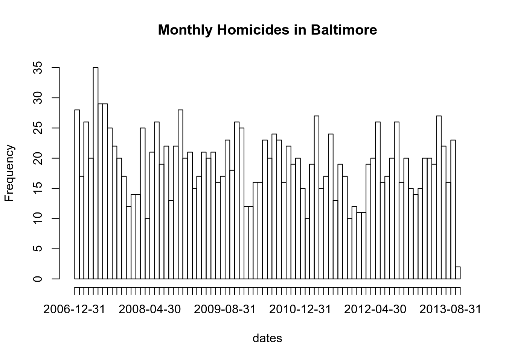

^$[][^].|( )* and
+{ }( ) and \1, \2,
…* with ?base R package
functions for dealing with regular expressions.
grep().
grepl().
regexpr() and gregexpr().
sub() and gsub().
regexec() and extracting matches with substr()
and regmatches().tolower() or toupper(),
strsplit() and sapply().base
functions: nchar(), paste(),
paste0().stringr package
from the tydyverse collection.
base functions to stringr functions.grep(value = TRUE)
—-> str_subset()grepl() —->
str_detect()regexpr() and
regmatches() —-> str_extract()regexec() and
regmatches() —-> str_match()sub() —->
str_replace()gsub() —->
str_replace_all()stringr function: str_trim().Sys.Date(), and separately Sys.time(). Also
Sys.timezone().Date
object with format().Date
objects: not only Sys.date(), also
as.Date().Date
objects.weekdays() and the months() of
dates objects.julian().lubridate
package.
ymd(),
ydm(), mdy(), myd(),
dmy(), dym(), yq().*_hms(), *_hm(), *_h() family of
functions.day(), mday(),
wday(), qday(), yday().A very common data cleaning issue is to have text variables that are in nasty format or have extra spaces or periods or underscores that we need to remove.
We’re going to see how to manipulate those texts programatically in order to get nice, decent variable names but also texts in the actual dataset itself.
First, we’ll dive into regular expressions because it’s a powerful tool to define search patterns which can be used by string-serching functions for find or find and replace operations on strings.
Then we’re going to focus on those functions of the R language that work with strings and provide “regex” capablities (that is to say, functions that can process regular expressions in order to find matches and eventually make replacements operations on strings).
base and the stringr R packages.Regular expressions can be thought of as a combination of literals and metacharacters.
To draw an analogy with natural language, think of literal text forming the words of this language, and the metacharacters defining its grammar.
Regular expressions have a rich set of metacharacters.
Simplest pattern consists only of literals (a string of characters).
The literal nuclear would match to the following lines:
Ooh. I just learned that to keep myself alive after a nuclear blast!
Laozi says nuclear weapons are mas macho
Chaos in a country that has nuclear weapons -- not good.
my nephew is trying to teach me nuclear physics, or possibly just trying to
lol if you ever say "nuclear" people immediately think DEATH by radiation LOLWhat if we want to match:
In general, we need a way to express:
And that is what we can do with metacharacters.
^The carrot metacharacter, ^, represent
the start of a line.
For example,
^i thinkwill search for the phrase i followed by a space followed by t followed by h followed by i followed by n followed by k, at the start of a line;
and will match the lines
i think we all rule for participating
i think i have been outed
i think this will be quite fun actually
i think i need to go to work
i think i first saw zombo in 1999.$The dollar sign metacharacter, $,
represents the end of a line.
morning$will match the lines
well they had something this morning
then had to catch a tram home in the morning
dog obedience school in the morning
and yes happy birthday i forgot to say it earlier this morning
I walked in the rain this morning
good morning[]With the square brackets metacharacter, we can list a set of characters we will accept at a given point in the match.
For example, the following regular expression:
[Bb][Uu][Ss][Hh]will accept, for each of the letters of the word we are interested in, either a capital letter or a lowercase letter;
so, it will match the lines
The democrats are playing, "Name the worst thing about Bush!"
I smelled the desert creosote bush, brownies, BBQ chicken
BBQ and bushwalking at Molonglo Gorge
Bush TOLD you that North Korea is part of the Axis of Evil
I’m listening to Bush - Hurricane (Album Version)Another example:
^[Ii] amwill match
i am so angry at my boyfriend i can’t even bear to look at him
i am boycotting the apple store
I am twittering from iPhone
I am a very vengeful person when you ruin my sweetheart.
I am so over this. I need food. Mmmm bacon...Similarly, we can specify a range of letters or digits:
[a-z] matches any lowercase letter of the english
alphabet.[a-zA-Z] matches any lowercase or uppercase letter of
the english alphabet (notice that the order doesn’t matter
here).[0-9] matches any decimal digit.For example, this regular expression:
^[0-9][a-zA-Z]will search at the beginning of the line, any decimal digit followed by any letter of the alphabet either uppercase or lowercase (in other words, we want those lines that begin with a single number followed by a letter);
so, it will match the lines:
7th inning stretch
2nd half soon to begin. OSU did just win something
3am - cant sleep - too hot still.. :(
5ft 7 sent from heaven
1st sign of starvagtion[^]When used at the beginning of a character class, the
carrot ^ is also a metacharacter but with
a different meaning: it indicates matching
characters NOT in the indicated class.
For example, the regular expression:
[^?.]$will search for lines that do not have a question mark or a dot at the end of the line;
so, it will match the lines
i like basketballs
6 and 9
dont worry... we all die anyway!
Not in Baghdad
helicopter under water? hmmm.The dot or period metacharacter, ., is
used to refer to any character (including
nothing).
So, the following regular expression:
9.11will search for the literal nine followed by any characther followed by the literal one followed by another digit one (in other words, we should be looking for any reasonable combination of the date “nine eleven”, but we could get other things though such us ips, times, account numbers, etc.);
so, it will match the lines
its stupid the post 9-11 rules
if any 1 of us did 9/11 we would have been caught in days.
NetBios: scanning ip 203.169.114.66
Front Door 9:11:46 AM
Sings: 0118999881999119725...3 !. metacharacter also matches
nothing. Infact, we can see that the only
combination of a nine followed by anything and two
ones in the line, is the sequence ...911...|The vertical line metacharacter does not mean “pipe” in the context of regular expressions; instead it translates to or.
flood|firewill match the lines
is firewire like usb on none macs?
the global flood makes sense within the context of the bible
yeah ive had the fire on tonight
... and the floods, hurricanes, killer heatwaves, rednecks, gun nuts, etc.We can include any number of alternatives…
flood|earthquake|hurricane|coldfirewill match the lines
Not a whole lot of hurricanes in the Arctic.
We do have earthquakes nearly every day somewhere in our State
hurricanes swirl in the other direction
coldfire is STRAIGHT!
’cause we keep getting earthquakesAs we said, the alternatives can be real expressions and not just literals:
^[Gg]ood|[Bb]adwill match the lines
good to hear some good knews from someone here
Good afternoon fellow american infidels!
good on you-what do you drive?
Katie... guess they had bad experiences...
my middle name is trouble, Miss Bad News( )Subexpressions are often contained in parentheses to constrain or limit the scope of alternatives.
For example, if we want to search for lines that start with one word belonging to a set of possible words, we can wrap them -constrain them- within the parentheses metacharacters and apply to them the carrot metacaracter.
^([Gg]ood|[Bb]ad)will match the lines
bad habbit
bad coordination today
good, becuase there is nothing worse than a man in kinky underwear
Badcop, its because people want to use drugs
Good Monday Holiday
Good riddance to LimeyThe question mark metacharacter indicates that the indicated expression is optional.
Let’s consider this regular expression:
[Gg]eorge( [Ww]\.)? [Bb]ushIt will search for the words George or george and Bush or bush and, optionally in the middle, a space followed by a W or w followed by the literal period. - Notice that the period is interpreted as a literal and not as the any metacharacter, because it is escaped with a backslash.
So, it will match the lines
i bet i can spell better than you and george bush combined
BBC reported that President George W. Bush claimed God told him to invade I
a bird in the hand is worth two george bushes* and +The asterisk or star, *, and the
plus, +, signs are metacharacters used to
indicate repetition.
* means any number, including none, of the
item (a literal, other metacharacter, expressions) that
preceeds that metacharacter.+ means at least one of the item (a literal,
other metacharacter, expressions) that preceeds that
metacharacter.For example, this regular expression:
\(.*\)searches for the literal (, followed by any character
reapeted any number of times -including none item-, followed by a the
literal ) (in other words, we want to find all the
expressions between parenthesis, including “void” parenthesis);
so, it will match the lines
anyone wanna chat? (24, m, germany)
hello, 20.m here... ( east area + drives + webcam )
(he means older men)
()Another example.
[0-9]+ (.*)[0-9]+This regular expression searches for at least one decimal digit, followed by a space, followed by any number of characters (including none), followed by at least one digit.
So, it will match the lines
working as MP here 720 MP battallion, 42nd birgade
so say 2 or 3 years at colleage and 4 at uni makes us 23 when and if we fin
it went down on several occasions for like, 3 or 4 *days*
Mmmm its time 4 me 2 go 2 bed{ }The curly braces metacharacters are referred to as interval quantifiers.
{m,n} let us specify the minimum and
maximum number of matches of an expression.{m} means exactly m matches.{m,} means at least m matches.For example, this regular expression:
[Bb]ush( +[^ ]+ +){1,5} debatewill search for [Bb]ush, followed by at least one
space <+>, followed at least by something
that is not a space <[^ ]+, followed by at
least another space <+>; and we want to see
that between 1 to 5 times <( +[^ ]+ +){1,5}> before a
space an the literal debate. In short, we want to see
between [Bb]ush and debate something like “space
not-space space” (that’s no other thing that a word)
repeated 1 to 5 times;
so, it will match the lines
Bush has historically won all major debates he’s done.
in my view, Bush doesn’t need these debates..
bush doesn’t need the debates? maybe you are right
That’s what Bush supporters are doing about the debate.
Felix, I don’t disagree that Bush was poorly prepared for the debate.
indeed, but still, Bush should have taken the debate more seriously.
Keep repeating that Bush smirked and scowled during the debate( ) and \1,
\2, …In most implementations of regular expressions, the parentheses metacharacters:
\1, \2, etc.For example:
+([a-zA-Z]+) +\1 +This regular expression will search for:
\1 means “put in here whatever
subexpression within the previous parentheses was matched”).In other words, it finds instances where any word is repeated.
So, it will match the lines
time for bed, night night twitter!
blah blah blah blah
my tattoo is so so itchy today
i was standing all all alone against the world outside...
hi anybody anybody at home
estudiando css css css css.... que desastritoooooNotice that we’re not searching here for a specific word to be repeated, butany word to be repeated. We don’t know the pattern that is going to be repeated.
That’s why we have to use the \1 to match whatever
parenthesized subexpression was previously found.
* with ?The * metacharacter is “greedy” so it always matches
the longest possible string that still satisfies the
regular expression.
Infact
^s(.*)ssearches at the beginning of the line for the longest string that initiates and finishes with an s, with anything in between -possible nothing-.
sitting at starbucks
setting up mysql and rails
studying stuff for the exams
spaghetti with marshmallows
stop fighting with crackers
sore shoulders, stupid ergonomicss of the word starbacks, but it
matched the longest possible string going further up to the last
s of starbacks.The greediness of * can be
turned off with the ?
metacharacter.
^s(.*?)s$Regular expressions are used in many different languages; not unique to R.
Regular expressions are composed of literals and metacharacters that represent sets or classes of characters/words.
Text processing via regular expressions is a very powerful way to extract data from “unfriendly” sources (not all data comes as a CSV file).
base R
package functions for dealing with regular expressions.Here’s the list of functions that we’re going to talk about:
Searching by patterns with grep(),
grepl()
grep() returns the indices into the
character vector that contain a match or the
values -specific strings- that happen to have the match
(value parameter).grepl() returns a logical vector
indicating which elements of the character vector contain a match.Searching by patterns with regexpr(),
gregexpr()
Searching by patterns and replacing with sub(),
gsub()
Searching by patternsregexec()
regexpr(), but it will
additionally return the locations of any
parenthesized sub-expressions.Fixing character vectors with tolower() or
toupper(), strsplit() and
sapply().
Other useful base functions: nchar(),
paste().
As our running examples, we’re going alternatively use three datasets:
The Baltimore city cameras dataset, that we’ve already downloaded
in the cameras.csv file.
The peer review experiment dataset and it’s files that we’ve also already downloaded:
reviews.csv is the set of problems that have been
reviewed by peers in this experiment.
solutions.csv is the set of the SAT questions that
have been submitted by people.
Finally, we wi’ll use data about homicides in Baltimore City.
The Baltimore Sun newspaper collects information on all homicides that occur in the city (it also reports on many of them).
That data is presented in a map that is publically available.
The Baltimore Sun homicides page
The data on that web site are not particularly amenable to analysis.
In a separate file, homicides.txt, there’re
homicides data from January 2007 to October 2013 directly scraped
from the website.
This dataset is formatted so each homicide is presented on a single line of text.
So we’ll read the data in using readLines() and end
up having a character vector whose elements represent, each, a single
homicide event.
homicides <- readLines("./3_data/homicides.txt")
class(homicides)
[1] "character"
## Total number of events recorded.
length(homicides)
[1] 1571
## Inspect some events.
homicides[1]
[1] "39.311024, -76.674227, iconHomicideShooting, 'p2', '<dl><dt>Leon Nelson</dt><dd class=\"address\">3400 Clifton Ave.<br />Baltimore, MD 21216</dd><dd>black male, 17 years old</dd><dd>Found on January 1, 2007</dd><dd>Victim died at Shock Trauma</dd><dd>Cause: shooting</dd></dl>'"
homicides[1000]
[1] "39.33626300000, -76.55553990000, icon_homicide_shooting, 'p1200', '<dl><dt><a href=\"http://essentials.baltimoresun.com/micro_sun/homicides/victim/1200/davon-diggs\">Davon Diggs</a></dt><dd class=\"address\">4100 Parkwood Ave<br />Baltimore, MD 21206</dd><dd>Race: Black<br />Gender: male<br />Age: 21 years old</dd><dd>Found on November 5, 2011</dd><dd>Victim died at Johns Hopkins Bayview Medical Center </dd><dd>Cause: Shooting</dd><dd class=\"popup-note\"><p>Originally reported in 5000 Belair Road; later determined to be rear alley of 4100 block Parkwood</p></dd></dl>'"A few interesting features stand out:
grep().str(grep)
function (pattern, x, ignore.case = FALSE, perl = FALSE, value = FALSE,
fixed = FALSE, useBytes = FALSE, invert = FALSE) So suppose we wanted to identify the records for all the victims of shootings (as opposed to other causes)? How could we do that?
Well, we could make some tries based on what we know about the dataset:
iconHomicideShooting or
icon_homicide_shooting.Cause: shooting or
Cause: Shooting.# Matching the literal "iconHomicideShooting".
g <- grep("iconHomicideShooting", homicides)
str(g)
int [1:228] 1 2 6 7 8 9 10 11 12 13 ...
# It’s not uncommon over time for web site maintainers to change the names of files
# or update files. So let's grep now both icon names "iconHomicideShoot" or
# "icon_homicide_shooting"
g <- grep("iconHomicideShooting|icon_homicide_shooting", homicides)
str(g)
int [1:1263] 1 2 6 7 8 9 10 11 12 13 ...
# Now matching the cause of death field.
g <- grep("Cause: shooting", homicides)
str(g)
int [1:228] 1 2 6 7 8 9 10 11 12 13 ...
g <- grep("Cause: [Ss]hooting", homicides) # Better.
str(g)
int [1:1263] 1 2 6 7 8 9 10 11 12 13 ...
g <- grep("[Cc]ause: [Ss]hooting", homicides) # Same result.
str(g)
int [1:1263] 1 2 6 7 8 9 10 11 12 13 ...setdiff().One thing we have to be careful of when processing text data is not
grep things out of context.
For example, suppose we just greped on the expression
[Ss]hooting.
g <- grep("[Ss]hooting", homicides)
str(g)
int [1:1265] 1 2 6 7 8 9 10 11 12 13 ...Notice that we apparently picked up two extra homicides this way.
We can figure out which ones they are by comparing the
results of the two expressions with the
setdiff() command.
i <- grep("Cause: [Ss]hooting", homicides)
j <- grep("[Ss]hooting", homicides)
setdiff(i, j) # entries of "i" that are not in "j".
integer(0)
setdiff(j, i) # entries of "j" that are not in "i".
[1] 318 859
homicides[c(318, 859)]
[1] "39.28322500000, -76.63946800000, icon_homicide_bluntforce, 'p472', '<dl><dt><a href=\"http://essentials.baltimoresun.com/micro_sun/homicides/victim/472/lyle-dimeler\">Lyle Dimeler</a></dt><dd class=\"address\">400 S. Calhoun St.<br />Baltimore, MD 21223</dd><dd>Race: Unknown<br />Gender: male<br />Age: 53 years old</dd><dd>Found on November 18, 2008</dd><dd>Victim died at Maryland Shock Trauma Center</dd><dd>Cause: Blunt Force</dd><dd><a href=\"http://www.baltimoresun.com/news/local/bal-shootingdeath1118,0,3571249.story\">Read the article</a></dd></dl>'"
[2] "39.33743900000, -76.66316500000, icon_homicide_bluntforce, 'p914', '<dl><dt><a href=\"http://essentials.baltimoresun.com/micro_sun/homicides/victim/914/steven-harris\">Steven Harris</a></dt><dd class=\"address\">4200 Pimlico Road<br />Baltimore, MD 21215</dd><dd>Race: Black<br />Gender: male<br />Age: 38 years old</dd><dd>Found on July 29, 2010</dd><dd>Victim died at Scene</dd><dd>Cause: Blunt Force</dd><dd class=\"popup-note\"><p>Harris was found dead July 22 and ruled a shooting victim; an autopsy subsequently showed that he had not been shot,...</dd></dl>'"Conclusion: When developing a regular expression to extract entries from a large dataset, it’s important that we understand the formatting of the dataset well enough so that we can develop a specific expression that doesn’t accidentally grep data out of context.
victims13 <- grep("13 years old", homicides, value = TRUE)
victims13
[1] "39.343826, -76.679404, iconHomicideStabbing, 'p270', '<dl><dt>Tywonde Jones</dt><dd class=\"address\">5000 Cordelia Ave.<br />Baltimore, MD 21215</dd><dd>black male, 13 years old</dd><dd>Found on November 29, 2007</dd><dd>Cause: stabbing</dd><dd><a href=\"http://www.baltimoresun.com/news/local/baltimore_city/bal-stabbing1130,0,3512865.story\">Read the article</a></dd></dl>'"
[2] "39.31537200000, -76.59555500000, icon_homicide_shooting, 'p1249', '<dl><dt><a href=\"http://data.baltimoresun.com/bing-maps/homicides/victim/1249/monae-turnage\">Monae Turnage</a></dt><dd class=\"address\">1600 Cliftview Ave<br />Baltimore, MD 21213</dd><dd>Race: Black<br />Gender: female<br />Age: 13 years old</dd><dd>Found on March 4, 2012</dd><dd>Victim died at Scene</dd><dd>Cause: Shooting</dd><dd class=\"popup-note\"><p>Found under trash bags in backyard; had been earlier reported missing</p></dd></dl>'"g <- grep("UnicornioAzul", homicides)
length(g)
[1] 0This time we go back to the Baltimore fixed camera data that we’ve
already downloaded in the camera.csv file and read it in as
a data frame.
camerasData <- read.csv("./3_data/cameras.csv")So, let’s assume we want to know if there’s a camera along a certain street, say “Alameda” street.
This example is very straightforward because all we have to do is
take that literal and search for a match in the
intersection column of the camerasData data
frame, that is going to be the character vector that we’re going to give
as input to these functions.
str(camerasData$intersection)
Factor w/ 74 levels "\nPulaski Hwy \n & Moravia Park Drive",..: 21 29 10 74 62 37 48 42 6 43 ...
# Search expression: the literal "Alameda". Returns the indices of the elements
# that contains the searched expression.
grep("Alameda", camerasData$intersection)
[1] 65 69 79
camerasData$intersection[c(65, 69, 79)]
[1] E 33rd & The Alameda The Alameda & 33rd St Harford \n & The Alameda
74 Levels: \nPulaski Hwy \n & Moravia Park Drive & ... York Rd \n & Gitting Ave
# Returns the actual values.
grep("Alameda", camerasData$intersection, value = TRUE)
[1] "E 33rd & The Alameda" "The Alameda & 33rd St"
[3] "Harford \n & The Alameda"
# Checking that a particular value DOES NOT appear.
grep("UnicornioAzul", camerasData$intersection)
integer(0)
length(grep("UnicornioAzul", camerasData$intersection))
[1] 0grepl().str(grepl)
function (pattern, x, ignore.case = FALSE, perl = FALSE, fixed = FALSE,
useBytes = FALSE) This function works much like grep() except that it
differs in its return value.
grepl() returns a logical vector
indicating which element of a character vector contains the
match.
That logical vector can of course be used to subset the original dataset.
victims13 <- grepl("13 years old", homicides)
str(victims13)
logi [1:1571] FALSE FALSE FALSE FALSE FALSE FALSE ...
table(victims13)
victims13
FALSE TRUE
1569 2
homicides[victims13]
[1] "39.343826, -76.679404, iconHomicideStabbing, 'p270', '<dl><dt>Tywonde Jones</dt><dd class=\"address\">5000 Cordelia Ave.<br />Baltimore, MD 21215</dd><dd>black male, 13 years old</dd><dd>Found on November 29, 2007</dd><dd>Cause: stabbing</dd><dd><a href=\"http://www.baltimoresun.com/news/local/baltimore_city/bal-stabbing1130,0,3512865.story\">Read the article</a></dd></dl>'"
[2] "39.31537200000, -76.59555500000, icon_homicide_shooting, 'p1249', '<dl><dt><a href=\"http://data.baltimoresun.com/bing-maps/homicides/victim/1249/monae-turnage\">Monae Turnage</a></dt><dd class=\"address\">1600 Cliftview Ave<br />Baltimore, MD 21213</dd><dd>Race: Black<br />Gender: female<br />Age: 13 years old</dd><dd>Found on March 4, 2012</dd><dd>Victim died at Scene</dd><dd>Cause: Shooting</dd><dd class=\"popup-note\"><p>Found under trash bags in backyard; had been earlier reported missing</p></dd></dl>'"logicalVec <- grepl("Alameda", camerasData$intersection)
str(logicalVec)
logi [1:80] FALSE FALSE FALSE FALSE FALSE FALSE ...
table(logicalVec)
logicalVec
FALSE TRUE
77 3
camerasData2 <- camerasData[logicalVec, ]
camerasData2
address direction street crossStreet
65 E 33RD ST & THE ALAMEDA E/B E 33rd The Alameda
69 THE ALAMEDA & E 33RD ST S/B The Alameda 33rd St
79 HARFORD RD & THE ALAMEDA N/B Harford \n The Alameda
intersection Location.1 X2010.Census.Neighborhoods
65 E 33rd & The Alameda (39.328341, -76.595359) 77
69 The Alameda & 33rd St (39.328501, -76.595355) 77
79 Harford \n & The Alameda (39.321207, -76.590771) 54
X2010.Census.Wards.Precincts Zip.Codes
65 180 27307
69 186 27307
79 189 27307
camerasData3 <- camerasData[!logicalVec, ]
head(camerasData3)
address direction street
1 GARRISON BLVD & WABASH AVE E/B Garrison \n
2 HILLEN ST & FORREST ST W/B Hillen \n
3 EDMONDSON AVE & N ATHOL AVE E/B Edmonson\n
4 YORK RD & GITTINGS AVE S/B York Rd \n
5 RUSSELL ST & W HAMBURG ST S/B Russell\n
6 S MARTIN LUTHER KING JR BLVD & W PRATT ST S/B MLK Jr. Blvd \n
crossStreet intersection Location.1
1 Wabash Ave Garrison \n & Wabash Ave (39.341209, -76.683117)
2 Forrest St Hillen \n & Forrest St (39.29686, -76.605532)
3 Woodbridge Ave Edmonson\n & Woodbridge Ave (39.293453, -76.689391)
4 Gitting Ave York Rd \n & Gitting Ave (39.370493, -76.609812)
5 Hamburg St Russell\n & Hamburg St (39.279819, -76.623911)
6 Pratt St MLK Jr. Blvd \n & Pratt St (39.286027, -76.627846)
X2010.Census.Neighborhoods X2010.Census.Wards.Precincts Zip.Codes
1 252 63 27295
2 179 108 13645
3 213 75 27950
4 37 270 14009
5 250 178 27953
6 11 168 27953regexpr() and gregexpr().grep() and grepl().In particular, both functions tell us which strings in a character vector match a certain pattern but they:
regexpr() and gregexpr() work.str(regexpr)
function (pattern, text, ignore.case = FALSE, perl = FALSE, fixed = FALSE,
useBytes = FALSE)
str(gregexpr)
function (pattern, text, ignore.case = FALSE, perl = FALSE, fixed = FALSE,
useBytes = FALSE) The regexr() function returns:
text parameter,
giving:
-1 if there is none.match.length giving:
While regexpr() only gives us the first match of the
string (reading left to right), gregexpr()
will give us all of the matches in a given string
if there are more than one match.
In our Baltimore City homicides dataset, we might be interested in finding the date on which each victim was found.
Taking a look at the dataset:
homicides[1]
[1] "39.311024, -76.674227, iconHomicideShooting, 'p2', '<dl><dt>Leon Nelson</dt><dd class=\"address\">3400 Clifton Ave.<br />Baltimore, MD 21216</dd><dd>black male, 17 years old</dd><dd>Found on January 1, 2007</dd><dd>Victim died at Shock Trauma</dd><dd>Cause: shooting</dd></dl>'"it seems that we might be able to just grep on the word “Found”.
However, the word “found” may appear elsewhere in the entry, such as in this entry, where the word “found” appears in the narrative text at the end.
homicides[954]
[1] "39.30677400000, -76.59891100000, icon_homicide_shooting, 'p816', '<dl><dt><a href=\"http://essentials.baltimoresun.com/micro_sun/homicides/victim/816/kenly-wheeler\">Kenly Wheeler</a></dt><dd class=\"address\">1400 N Caroline St<br />Baltimore, MD 21213</dd><dd>Race: Black<br />Gender: male<br />Age: 29 years old</dd><dd>Found on March 3, 2010</dd><dd>Victim died at Scene</dd><dd>Cause: Shooting</dd><dd class=\"popup-note\"><p>Wheeler\\'s body was found on the grounds of Dr. Bernard Harris Sr. Elementary School</p></dd></dl>'"But we can see that the date is:
So let’s use the pattern
<dd>[F|f]ound(.*)</dd> and see what it brings
up, taking only the first 10 entries.
regexpr("<dd>[F|f]ound(.*)</dd>", homicides[1:10])
[1] 177 178 188 189 178 182 178 187 182 183
attr(,"match.length")
[1] 93 86 89 90 89 84 85 84 88 84
attr(,"index.type")
[1] "chars"
attr(,"useBytes")
[1] TRUEsubstr() and regmatches().substr() is a useful function of the base
package that we can naturally combine with regexpr(), in
the sense that we can use substr() to extract the
first match in a given string (or vector entry in our
example).
str(substr)
function (x, start, stop)
substr(homicides[1], 177, 177 + 93-1)
[1] "<dd>Found on January 1, 2007</dd><dd>Victim died at Shock Trauma</dd><dd>Cause: shooting</dd>"
substr(homicides[2], 178, 178 + 86-1)
[1] "<dd>Found on January 2, 2007</dd><dd>Victim died at scene</dd><dd>Cause: shooting</dd>"
substr(homicides[1:3],
c(177, 178, 188),
c(177 + 93-1, 178 + 86-1, 188 + 89-1))
[1] "<dd>Found on January 1, 2007</dd><dd>Victim died at Shock Trauma</dd><dd>Cause: shooting</dd>"
[2] "<dd>Found on January 2, 2007</dd><dd>Victim died at scene</dd><dd>Cause: shooting</dd>"
[3] "<dd>Found on January 2, 2007</dd><dd>Victim died at scene</dd><dd>Cause: blunt force</dd>" While it’s straightforward to take the output of
regexpr() and feed it into substr() to get the
matches out of the original data, another handy function is
regmatches() which *extracts the matches in the
strings/entries for us without you having to use**
substr().
matchedEntries <- regexpr("<dd>[F|f]ound(.*)</dd>", homicides[1:5])
regmatches(homicides[1:5], matchedEntries)
[1] "<dd>Found on January 1, 2007</dd><dd>Victim died at Shock Trauma</dd><dd>Cause: shooting</dd>"
[2] "<dd>Found on January 2, 2007</dd><dd>Victim died at scene</dd><dd>Cause: shooting</dd>"
[3] "<dd>Found on January 2, 2007</dd><dd>Victim died at scene</dd><dd>Cause: blunt force</dd>"
[4] "<dd>Found on January 3, 2007</dd><dd>Victim died at scene</dd><dd>Cause: asphyxiation</dd>"
[5] "<dd>Found on January 5, 2007</dd><dd>Victim died at scene</dd><dd>Cause: blunt force</dd>" Immediately, we can see that the previous regular expression picked up too much information. This is because the pattern was too greedy and matched too much of the string.
We need to use the ? metacharacter to
make the regular expression lazy so that it stops at
the first </dd> tag.
matchedEntries <- regexpr("<dd>[F|f]ound(.*?)</dd>", homicides[1:5])
matchedEntries
[1] 177 178 188 189 178
attr(,"match.length")
[1] 33 33 33 33 33
attr(,"index.type")
[1] "chars"
attr(,"useBytes")
[1] TRUE
substr(homicides[1], 177, 177 + 33-1)
[1] "<dd>Found on January 1, 2007</dd>"
regmatches(homicides[1:5], matchedEntries)
[1] "<dd>Found on January 1, 2007</dd>" "<dd>Found on January 2, 2007</dd>"
[3] "<dd>Found on January 2, 2007</dd>" "<dd>Found on January 3, 2007</dd>"
[5] "<dd>Found on January 5, 2007</dd>"sub() and
gsub().Sometimes we need to clean things up or modify strings by matching a pattern and replacing it with something else.
We can make that job using these functions:
str(sub)
function (pattern, replacement, x, ignore.case = FALSE, perl = FALSE, fixed = FALSE,
useBytes = FALSE)
str(gsub)
function (pattern, replacement, x, ignore.case = FALSE, perl = FALSE, fixed = FALSE,
useBytes = FALSE) sub() performs replacement of the first match
only.gsub() performs replacment of all
matches.For example, how can we extract the date from this string?
x <- substr(homicides[1], 177, 177 + 33-1)
x
[1] "<dd>Found on January 1, 2007</dd>"We want to strip out the stuff surrounding the “January 1, 2007” portion:
| operator, andsub("<dd>[F|f]ound on |</dd>", "", x)
[1] "January 1, 2007</dd>"sub() didn’t solve entirely the
problem because it found the first match (at the beginning of
the string) and repaced but then stopped.gsub() to replace all
matches.gsub("<dd>[F|f]ound on |</dd>", "", x)
[1] "January 1, 2007"Let’s pass a vector of strings to process:
positions <- regexpr("<dd>[F|f]ound(.*?)</dd>", homicides[1:5])
strvector <- regmatches(homicides[1:5], positions)
strvector
[1] "<dd>Found on January 1, 2007</dd>" "<dd>Found on January 2, 2007</dd>"
[3] "<dd>Found on January 2, 2007</dd>" "<dd>Found on January 3, 2007</dd>"
[5] "<dd>Found on January 5, 2007</dd>"
dates <- gsub("<dd>[F|f]ound on |</dd>", "", strvector)
dates
[1] "January 1, 2007" "January 2, 2007" "January 2, 2007" "January 3, 2007"
[5] "January 5, 2007"
dates <- gsub("January", "Enero", dates)
dates
[1] "Enero 1, 2007" "Enero 2, 2007" "Enero 2, 2007" "Enero 3, 2007"
[5] "Enero 5, 2007"
as.Date(dates, "%B %d, %Y")
[1] "2007-01-01" "2007-01-02" "2007-01-02" "2007-01-03" "2007-01-05"Let’s load the files of the peer review experiment dataset.
reviews <- read.csv("./3_data/reviews.csv")
names(reviews)
[1] "id" "solution_id" "reviewer_id" "start" "stop"
[6] "time_left" "accept"
solutions <- read.csv("./3_data/solutions.csv")
names(solutions)
[1] "id" "problem_id" "subject_id" "start" "stop"
[6] "time_left" "answer"
testName <- "this_is_a_test"
testName
[1] "this_is_a_test"We want to remove the undersocres from the names of the variables.
# Substitue the first "underscore" in each element with "nothing".
sub("_", "", names(reviews))
[1] "id" "solutionid" "reviewerid" "start" "stop"
[6] "timeleft" "accept"
sub("_", "", testName)
[1] "thisis_a_test"
# Substitute multiple instances of "underscore" in the same element.
gsub("_", "", testName)
[1] "thisisatest"regexec() and extracting matches with
substr() and regmatches().The regexec() function works like regexpr()
except it gives further information about the indices for
parenthesized sub-expressions.
For example, let’s take this regular expression
<dd>[F|f]ound on (.*?)</dd>:
So, if we give this pattern to regexec() for searching
in, say, the first string or entry of our homicides vector
of string:
matched <- regexec("<dd>[F|f]ound on (.*?)</dd>", homicides[1])
matched
[[1]]
[1] 177 190
attr(,"match.length")
[1] 33 15
attr(,"index.type")
[1] "chars"
attr(,"useBytes")
[1] TRUE
substr(homicides[1], 177, 177 + 33-1) # overall expression match.
[1] "<dd>Found on January 1, 2007</dd>"
substr(homicides[1], 190, 190 + 15-1) # parenthesized sub-expression.
[1] "January 1, 2007"
regmatches(homicides[1], matched)
[[1]]
[1] "<dd>Found on January 1, 2007</dd>" "January 1, 2007" we can see in the output of regexec() that there are
two indices giving two pieces of information about the
searching string:
regexpr did, where the overall
match begins.substr() to extract either the overall expression match
or the parenthesized sub-expression.regmatches() to more easily get both
things at once in a list.If we feed regexec() with a vector of
strings, it returns a list with all that
information for each string.
matchesList <- regexec("<dd>[F|f]ound on (.*?)</dd>", homicides[1:3])
matchesList
[[1]]
[1] 177 190
attr(,"match.length")
[1] 33 15
attr(,"index.type")
[1] "chars"
attr(,"useBytes")
[1] TRUE
[[2]]
[1] 178 191
attr(,"match.length")
[1] 33 15
attr(,"index.type")
[1] "chars"
attr(,"useBytes")
[1] TRUE
[[3]]
[1] 188 201
attr(,"match.length")
[1] 33 15
attr(,"index.type")
[1] "chars"
attr(,"useBytes")
[1] TRUE
regmatches(homicides[1:3], matchesList)
[[1]]
[1] "<dd>Found on January 1, 2007</dd>" "January 1, 2007"
[[2]]
[1] "<dd>Found on January 2, 2007</dd>" "January 2, 2007"
[[3]]
[1] "<dd>Found on January 2, 2007</dd>" "January 2, 2007" Notice: if we give to regexec() a
pattern without any parenthesized sub-expression, we get a list with the
same information that regexpr() gives us in the form of a
vector.
regexec("<dd>[F|f]ound on .*?</dd>", homicides[1:2])
[[1]]
[1] 177
attr(,"match.length")
[1] 33
attr(,"index.type")
[1] "chars"
attr(,"useBytes")
[1] TRUE
[[2]]
[1] 178
attr(,"match.length")
[1] 33
attr(,"index.type")
[1] "chars"
attr(,"useBytes")
[1] TRUE
regexpr("<dd>[F|f]ound on .*?</dd>", homicides[1:2])
[1] 177 178
attr(,"match.length")
[1] 33 33
attr(,"index.type")
[1] "chars"
attr(,"useBytes")
[1] TRUEAs a final example, we can make a plot of monthly homicide counts.
First we need a regular expression to capture the dates.
positions <- regexec("<dd>[F|f]ound on (.*?)</dd>", homicides)
strlist <- regmatches(homicides, positions)
length(strlist)
[1] 1571
head(strlist)
[[1]]
[1] "<dd>Found on January 1, 2007</dd>" "January 1, 2007"
[[2]]
[1] "<dd>Found on January 2, 2007</dd>" "January 2, 2007"
[[3]]
[1] "<dd>Found on January 2, 2007</dd>" "January 2, 2007"
[[4]]
[1] "<dd>Found on January 3, 2007</dd>" "January 3, 2007"
[[5]]
[1] "<dd>Found on January 5, 2007</dd>" "January 5, 2007"
[[6]]
[1] "<dd>Found on January 5, 2007</dd>" "January 5, 2007" Then we can loop through the list returned by
regmatches() and extract the second
element (the parenthesized sub-expression) of each.
secondElement <- function(x) {x[2]}
dates <- sapply(strlist, secondElement)
head(dates)
[1] "January 1, 2007" "January 2, 2007" "January 2, 2007" "January 3, 2007"
[5] "January 5, 2007" "January 5, 2007"
sum(is.na(dates))
[1] 1
which(is.na(dates)) # NA at 515 index, only one missing value doesn't matter.
[1] 515Finally, we can convert the date strings into the
Date class and make an histogram of the
counts.
# First we need to adjust months names to my local system date format.
months <- c("January", "February", "March", "April", "May", "June", "July", "August",
"September", "October", "November", "December")
meses <- c("Enero", "Febrero", "Marzo", "Abril", "Mayo", "Junio", "Julio", "Agosto",
"Septiembre", "Octubre", "Noviembre", "Diciembre")
for(i in seq_along(months)) {
dates <- gsub(months[i], meses[i], dates)
}
summary(dates)
Length Class Mode
1571 character character
head(dates)
[1] "Enero 1, 2007" "Enero 2, 2007" "Enero 2, 2007" "Enero 3, 2007"
[5] "Enero 5, 2007" "Enero 5, 2007"
# Now we can convert.
dates <- as.Date(dates, "%B %d, %Y")
summary(dates)
Min. 1st Qu. Median Mean 3rd Qu. Max.
"2007-01-01" "2008-07-08" "2010-03-15" "2010-04-02" "2012-01-04" "2013-10-14"
NA's
"1"
hist(dates, "month", freq = TRUE, main = "Monthly Homicides in Baltimore")
tolower() or toupper(),
strsplit() and sapply().Let’s look now at the names of the variables in the
cameras.csv dataset. We’ll focus on some common issues
regarding the problem of cleaning data:
crossStreet.tolower()
command (there’s also a toupper() comand).sapply().camerasData <- read.csv("./3_data/cameras.csv")
names(camerasData)
[1] "address" "direction"
[3] "street" "crossStreet"
[5] "intersection" "Location.1"
[7] "X2010.Census.Neighborhoods" "X2010.Census.Wards.Precincts"
[9] "Zip.Codes"
camerasNames <- tolower(names(camerasData))
camerasNames
[1] "address" "direction"
[3] "street" "crossstreet"
[5] "intersection" "location.1"
[7] "x2010.census.neighborhoods" "x2010.census.wards.precincts"
[9] "zip.codes"
splitedNames <- strsplit(camerasNames, "\\.")
splitedNames
[[1]]
[1] "address"
[[2]]
[1] "direction"
[[3]]
[1] "street"
[[4]]
[1] "crossstreet"
[[5]]
[1] "intersection"
[[6]]
[1] "location" "1"
[[7]]
[1] "x2010" "census" "neighborhoods"
[[8]]
[1] "x2010" "census" "wards" "precincts"
[[9]]
[1] "zip" "codes"
firstElement <- function(x) {x[1]}
sapply(splitedNames, firstElement)
[1] "address" "direction" "street" "crossstreet" "intersection"
[6] "location" "x2010" "x2010" "zip" base functions: nchar(), paste(),
paste0().nchar("Unicornio Azul")
[1] 14
paste("Unicornio", "Azul") # Space separator by default.
[1] "Unicornio Azul"
paste0("Unicornio", "Azul") # No separator at all by default.
[1] "UnicornioAzul"stringr package from the tydyverse
collection.The package is part of the tidyverse
collection of packages and wraps they underlying
stringi package in a series of convenience
functions.
Some of the complexity of using the
base R regular expression functions is usefully
hidden by the stringr functions.
In addition, the stringr functions provide a
more rational interface to regular expressions with
more consistency in the arguments and argument
ordering.
library(stringr)base functions to stringr
functions.In general, for the stringr functions:
the data are the first argument, and
the regular expression is the second argument, with
optional arguments afterwards.
grep(value = TRUE) —-> str_subset()str_subset() is much like
grep(value = TRUE) and returns a character vector
of strings that contain a given
match.
g <- str_subset(homicides, "iconHomicideShooting|icon_homicide_shooting")
length(g)
[1] 1263
head(g)
[1] "39.311024, -76.674227, iconHomicideShooting, 'p2', '<dl><dt>Leon Nelson</dt><dd class=\"address\">3400 Clifton Ave.<br />Baltimore, MD 21216</dd><dd>black male, 17 years old</dd><dd>Found on January 1, 2007</dd><dd>Victim died at Shock Trauma</dd><dd>Cause: shooting</dd></dl>'"
[2] "39.312641, -76.698948, iconHomicideShooting, 'p3', '<dl><dt>Eddie Golf</dt><dd class=\"address\">4900 Challedon Road<br />Baltimore, MD 21207</dd><dd>black male, 26 years old</dd><dd>Found on January 2, 2007</dd><dd>Victim died at scene</dd><dd>Cause: shooting</dd></dl>'"
[3] "39.352676, -76.607979, iconHomicideShooting, 'p7', '<dl><dt>Michael Cunningham</dt><dd class=\"address\">5200 Ready Ave.<br />Baltimore, MD 21212</dd><dd>black male, 46 years old</dd><dd>Found on January 5, 2007</dd><dd>Victim died at JHH</dd><dd>Cause: shooting</dd></dl>'"
[4] "39.310999, -76.622023, iconHomicideShooting, 'p8', '<dl><dt>Ray Alston</dt><dd class=\"address\">300 West North Ave.<br />Baltimore, MD 21217</dd><dd>black male, 27 years old</dd><dd>Found on January 5, 2007</dd><dd>Victim died at UMMC</dd><dd>Cause: shooting</dd></dl>'"
[5] "39.311103, -76.584475, iconHomicideShooting, 'p9', '<dl><dt>Yule Henderson</dt><dd class=\"address\">1800 North Montford Ave.<br />Baltimore, MD 21213</dd><dd>black male, 21 years old</dd><dd>Found on January 7, 2007</dd><dd>Victim died at JHH</dd><dd>Cause: shooting</dd></dl>'"
[6] "39.348101, -76.564960, iconHomicideShooting, 'p10', '<dl><dt>Marcus McDowell</dt><dd class=\"address\">5100 Harford Road<br />Baltimore, MD 21214</dd><dd>black male, 16 years old</dd><dd>Found on January 8, 2007</dd><dd>Victim died at Bayview</dd><dd>Cause: shooting</dd></dl>'" grepl() —-> str_detect()str_detect() is essentially grepl()
victims13 <- str_detect(homicides, "13 years old")
str(victims13)
logi [1:1571] FALSE FALSE FALSE FALSE FALSE FALSE ...
table(victims13)
victims13
FALSE TRUE
1569 2
homicides[victims13]
[1] "39.343826, -76.679404, iconHomicideStabbing, 'p270', '<dl><dt>Tywonde Jones</dt><dd class=\"address\">5000 Cordelia Ave.<br />Baltimore, MD 21215</dd><dd>black male, 13 years old</dd><dd>Found on November 29, 2007</dd><dd>Cause: stabbing</dd><dd><a href=\"http://www.baltimoresun.com/news/local/baltimore_city/bal-stabbing1130,0,3512865.story\">Read the article</a></dd></dl>'"
[2] "39.31537200000, -76.59555500000, icon_homicide_shooting, 'p1249', '<dl><dt><a href=\"http://data.baltimoresun.com/bing-maps/homicides/victim/1249/monae-turnage\">Monae Turnage</a></dt><dd class=\"address\">1600 Cliftview Ave<br />Baltimore, MD 21213</dd><dd>Race: Black<br />Gender: female<br />Age: 13 years old</dd><dd>Found on March 4, 2012</dd><dd>Victim died at Scene</dd><dd>Cause: Shooting</dd><dd class=\"popup-note\"><p>Found under trash bags in backyard; had been earlier reported missing</p></dd></dl>'"regexpr() and regmatches() —->
str_extract()str_extract() plays the role of regexpr()
and regmatches() , extracting the matches
from the output.
str_extract(homicides[1:10], "<dd>[F|f]ound(.*?)</dd>")
[1] "<dd>Found on January 1, 2007</dd>" "<dd>Found on January 2, 2007</dd>"
[3] "<dd>Found on January 2, 2007</dd>" "<dd>Found on January 3, 2007</dd>"
[5] "<dd>Found on January 5, 2007</dd>" "<dd>Found on January 5, 2007</dd>"
[7] "<dd>Found on January 5, 2007</dd>" "<dd>Found on January 7, 2007</dd>"
[9] "<dd>Found on January 8, 2007</dd>" "<dd>Found on January 8, 2007</dd>"regexec() and regmatches() —->
str_match()str_match() does the job of regexec() and
regmatches() by providing a matrix
(instead of a list) containing the parenthesized
sub-expressions.
m <- str_match(homicides[1:5], "<dd>[F|f]ound on (.*?)</dd>")
m
[,1] [,2]
[1,] "<dd>Found on January 1, 2007</dd>" "January 1, 2007"
[2,] "<dd>Found on January 2, 2007</dd>" "January 2, 2007"
[3,] "<dd>Found on January 2, 2007</dd>" "January 2, 2007"
[4,] "<dd>Found on January 3, 2007</dd>" "January 3, 2007"
[5,] "<dd>Found on January 5, 2007</dd>" "January 5, 2007"
m[, 2]
[1] "January 1, 2007" "January 2, 2007" "January 2, 2007" "January 3, 2007"
[5] "January 5, 2007"Now the second column of the matrix contains the values of the parenthesized sub-expressions.
If there had been more parenthesized sub-expressions, there would have been more columns in the output matrix.
sub()
—-> str_replace()strvector
[1] "<dd>Found on January 1, 2007</dd>" "<dd>Found on January 2, 2007</dd>"
[3] "<dd>Found on January 2, 2007</dd>" "<dd>Found on January 3, 2007</dd>"
[5] "<dd>Found on January 5, 2007</dd>"
sub("<dd>[F|f]ound on |</dd>", "", strvector)
[1] "January 1, 2007</dd>" "January 2, 2007</dd>" "January 2, 2007</dd>"
[4] "January 3, 2007</dd>" "January 5, 2007</dd>"
str_replace(strvector, "<dd>[F|f]ound on |</dd>", "")
[1] "January 1, 2007</dd>" "January 2, 2007</dd>" "January 2, 2007</dd>"
[4] "January 3, 2007</dd>" "January 5, 2007</dd>"gsub()
—-> str_replace_all()strvector
[1] "<dd>Found on January 1, 2007</dd>" "<dd>Found on January 2, 2007</dd>"
[3] "<dd>Found on January 2, 2007</dd>" "<dd>Found on January 3, 2007</dd>"
[5] "<dd>Found on January 5, 2007</dd>"
gsub("<dd>[F|f]ound on |</dd>", "", strvector)
[1] "January 1, 2007" "January 2, 2007" "January 2, 2007" "January 3, 2007"
[5] "January 5, 2007"
str_replace_all(strvector, "<dd>[F|f]ound on |</dd>", "")
[1] "January 1, 2007" "January 2, 2007" "January 2, 2007" "January 3, 2007"
[5] "January 5, 2007"stringr function: str_trim().In the stringr package there’s a very nice function
called str_trim().
str(str_trim)
function (string, side = c("both", "left", "right"))
str_trim("Unicornio ") # Get rid of white spaces at the end...
[1] "Unicornio"
str_trim(" Unicornio ") # ... and the beginning.
[1] "Unicornio"d1 = date()
d1
[1] "Sat Feb 18 08:04:25 2023"
class(d1)
[1] "character"Sys.Date(), and separately Sys.time(). Also
Sys.timezone().We can create a Date object with the
Sys.Date() command, which returns the
system’s current day in the current time zone.
Sys.time()d2 = Sys.Date()
d2
[1] "2023-02-18"
class(d2)
[1] "Date"
Sys.time()
[1] "2023-02-18 08:04:25 -03"
Sys.timezone()
[1] "America/Argentina/Rio_Gallegos"Sys.Date() returns an object that
has some different properties (a Date object instead of a
character object) that make it:
Date object with format().So one thing that we might want to do is reformat a Date
object to get a format that is nice and visually appealing.
We can use the format() command for this.
Date object as first argument, we can
specify as second argument the proper format string wich
conforms to the following syntax:
%d = day as number (0-31)%a = abbreviated weekday%A = unabbreviated weekday%m = month (00-12)%b = abbreviated month%B = unabbrevidated month%y = 2 digit year%Y = four digit yearformat(d2,"%a %b %d")
[1] "sáb feb 18"Date objects: not only Sys.date(), also
as.Date().We can also create a Date object with the
as.Date() command.
For example, if we happen to have a character vector with a
bunch of different dates, we can turn it into
dates by telling the function
as.Date(), using the format syntax we’ve seen before, that
it should be looking for a day, for a month and then for a year:
x = c("1ene1960", "2ene1960", "31mar1960", "30jul1960")
z = as.Date(x, "%d%b%Y")
z
[1] "1960-01-01" "1960-01-02" "1960-03-31" "1960-07-30"Date objects.We can also manipulate Date objects.
For example, we can figure out how far apart they are among other things.
So we can actually turn that into a numeric variable and get the differences between dates in terms of the number of days apart that they are, very easily using dates.
z[1] - z[2]
Time difference of -1 days
as.numeric(z[1]-z[2])
[1] -1weekdays() and the months() of
dates objects.weekdays(d2)
[1] "sábado"
months(d2)
[1] "febrero"julian().We can also convert a Date object to Julian, that is to
say, to the number of days that have occurred since the
origin.
julian(d2)
[1] 19406
attr(,"origin")
[1] "1970-01-01"lubridate package.The lubridate package is actually very nice and makes
working with dates even simpler.
library(lubridate)ymd(), ydm(), mdy(),
myd(), dmy(), dym(),
yq().We can convert a character or numeric
vector to a date object using the above
lubridate commands.
These functions recognize arbitrary non-digit separators as well as no separator.
As long as the order of formats is correct, these functions will parse dates correctly even when the input vectors contain differently formatted dates.
ymd("20140108")
[1] "2014-01-08"
mdy("08/04/2013")
[1] "2013-08-04"
dmy("03-04-2013")
[1] "2013-04-03"*_hms(), *_hm(), *_h() family
of functions.ymd_hms("2011-08-03 10:15:03")
[1] "2011-08-03 10:15:03 UTC"
dmy_hms("03-04-2013 10:15:03", tz="Pacific/Auckland")
[1] "2013-04-03 10:15:03 NZDT"day(),
mday(), wday(), qday(),
yday().x = dmy(c("1ene2013", "2ene2013", "31mar2013", "30jul2013"))
wday(x[1]) # in base packge is weekdays()
[1] 3
wday(x[1], label = TRUE)
[1] mar
Levels: dom < lun < mar < mié < jue < vie < sábMore information in this nice lubridate tutorial
Ultimately we want our dates and times as class Date
or the classes POSIXct, POSIXlt.
?POSIXlt.Let’s just point out some free data resources, which we can use to do some of analysis if we don’t happen to have any at the organization that we’re at.
Gapminder is another website that has a lot of data about world development, in particular in human heath.
This website gives us a lot of information about how do we actually access the surveys and process them in R.
It’s actually really nice because the surveys are often very big and unwieldy, and this website gives us a lot of information on how to access them.
http://www.infochimps.com/marketplace
The Infochimps Marketplace has a bunch of different data sets which we can sort by various different tags, and we can identify data sets that we might be interest to.
Some of them are free, and some of them cost money.
Kaggle is a company that offers data science competitions, and they often have very interesting data sets that they make available as part of those competitions.
So they’re good for practice, but they’re also good for potentially discovering new, interesting things that can help companies solve real problems.
There’s also some collections that have been put together by famous data scientists.
The following are several data scientists, Hilary Mason, Jeff Hammerbacher and others who have put together data sets that are research quality and that might be useful.
These all come from this blog post which talks about several other data sets, they’re curated by other data scientists as well.
There are also a large variety of other, more specialised collections.
So for example, the Stanford Large Network Data Archive has a large number of data sets that focus on network data, machine learning.
The UCI Machine Learning archive has a variety of data sets that can be used to practice our classification or predictions.
There’re also these famous sets of datasets available:
Finally, there a large number of APIs that we’ve now learned how to
use, for example, the twitteR package which can be used to
access the Twitter API, in an easier way than trying to set up a
application ourselves.
We can similarly get access to figshare data
Or to data from publications like Plos.
rOpenSci has a large number of very nice packages that
allow us to access data from a variety of sources that are
focused on academics.
There’s also dedicated R packages for Facebook and Google Maps.
All of these mean that there is really no excuse to not be able to find real data to focus on any project that we might be interested in.
sessionInfo()
R version 3.6.3 (2020-02-29)
Platform: x86_64-pc-linux-gnu (64-bit)
Running under: Ubuntu 18.04.6 LTS
Matrix products: default
BLAS: /usr/lib/x86_64-linux-gnu/blas/libblas.so.3.7.1
LAPACK: /usr/lib/x86_64-linux-gnu/lapack/liblapack.so.3.7.1
locale:
[1] LC_CTYPE=es_AR.UTF-8 LC_NUMERIC=C
[3] LC_TIME=es_AR.UTF-8 LC_COLLATE=es_AR.UTF-8
[5] LC_MONETARY=es_AR.UTF-8 LC_MESSAGES=es_AR.UTF-8
[7] LC_PAPER=es_AR.UTF-8 LC_NAME=es_AR.UTF-8
[9] LC_ADDRESS=es_AR.UTF-8 LC_TELEPHONE=es_AR.UTF-8
[11] LC_MEASUREMENT=es_AR.UTF-8 LC_IDENTIFICATION=es_AR.UTF-8
attached base packages:
[1] stats graphics grDevices utils datasets methods base
other attached packages:
[1] stringr_1.4.0 lubridate_1.9.2 quantmod_0.4.20 TTR_0.24.2
[5] xts_0.12.1 zoo_1.8-9 readr_2.0.1 tidyr_1.2.0
[9] dplyr_1.0.8 reshape2_1.4.4 Hmisc_4.4-0 ggplot2_3.3.5
[13] Formula_1.2-3 survival_3.4-0 lattice_0.20-45 jpeg_0.1-8.1
[17] gitignore_0.1.3 rhdf5_2.30.1 httr_1.4.2 httpuv_1.6.3
[21] sqldf_0.4-11 RSQLite_2.2.0 gsubfn_0.7 proto_1.0.0
[25] DBI_1.1.1 data.table_1.14.0 jsonlite_1.7.2 XML_3.99-0.3
[29] xlsx_0.6.3 plyr_1.8.6
loaded via a namespace (and not attached):
[1] bit64_4.0.5 RColorBrewer_1.1-2 tools_3.6.3
[4] backports_1.4.1 bslib_0.3.0 utf8_1.2.2
[7] R6_2.5.1 rpart_4.1.19 colorspace_2.0-3
[10] nnet_7.3-18 withr_2.5.0 tidyselect_1.2.0
[13] gridExtra_2.3 bit_4.0.4 curl_4.3.2
[16] compiler_3.6.3 chron_2.3-55 cli_3.6.0
[19] formatR_1.14 htmlTable_2.0.1 sass_0.4.0
[22] scales_1.1.1 checkmate_2.0.0 askpass_1.1
[25] digest_0.6.29 foreign_0.8-76 rmarkdown_2.11
[28] base64enc_0.1-3 pkgconfig_2.0.3 htmltools_0.5.2
[31] fastmap_1.1.0 highr_0.9 htmlwidgets_1.5.4
[34] rlang_1.0.6 rstudioapi_0.13 jquerylib_0.1.4
[37] generics_0.1.2 acepack_1.4.1 magrittr_2.0.2
[40] Matrix_1.5-1 Rcpp_1.0.7 munsell_0.5.0
[43] Rhdf5lib_1.8.0 fansi_1.0.2 clipr_0.7.1
[46] lifecycle_1.0.3 stringi_1.7.6 yaml_2.2.1
[49] grid_3.6.3 blob_1.2.2 promises_1.2.0.1
[52] crayon_1.5.0 splines_3.6.3 xlsxjars_0.6.1
[55] hms_1.1.0 knitr_1.41 pillar_1.7.0
[58] tcltk_3.6.3 glue_1.6.2 evaluate_0.19
[61] latticeExtra_0.6-29 vctrs_0.5.2 png_0.1-7
[64] tzdb_0.3.0 gtable_0.3.0 openssl_2.0.5
[67] purrr_0.3.4 assertthat_0.2.1 xfun_0.36
[70] later_1.3.0 tibble_3.1.8 rJava_0.9-13
[73] memoise_1.1.0 cluster_2.1.4 timechange_0.2.0
[76] ellipsis_0.3.2 Copyright © 2020 por Christian A. Karanicolas. Todos los derechos reservados. La elaboración de este sitio ha tenido como fuente principal de información el curso de Especialización en Ciencias de Datos brindado por la Johns Hopkins University a través de Coursera.